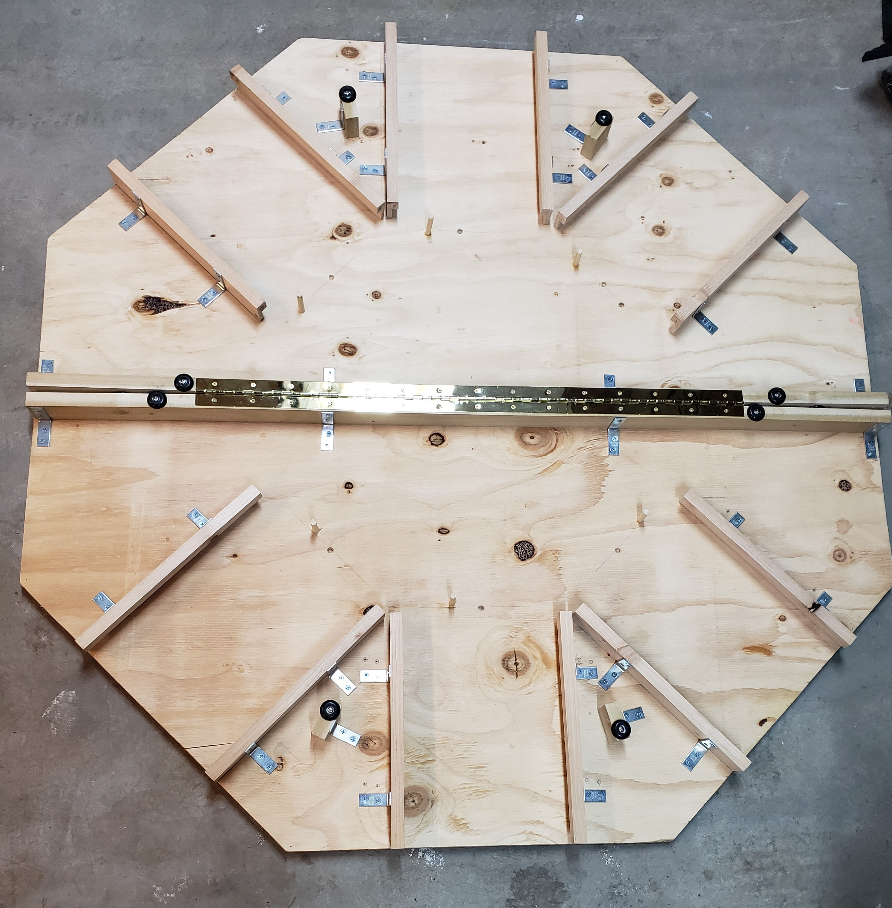
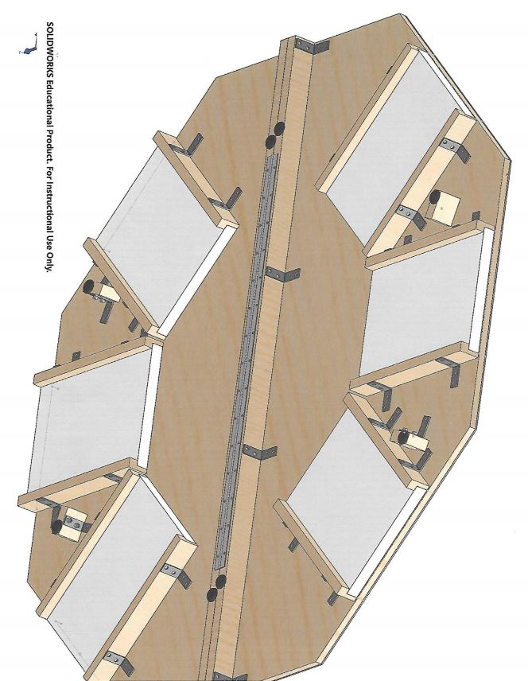

Portable Table Top Gaming Table
Challenge
With the introduction of Dungeons and Dragons 5th edition, table top gaming as a whole has grown in popularity in the past few years. We wanted to address the mobility and functional needs of the table top gamer.
Solution
Thinking it wouldn’t be wise to reinvent the wheel, my team and I took a look at the tried and true portable poker table top and improved upon it.
Result
Taking little more than its shape and hinge design, my team and I made something that any game master would be proud to display. We took it upon ourselves to make a prototype.
My Contribution
As the only member of the team that not only plays table top games, but runs them as well, I provided a great deal of input for desired functionality. During the design process, I provided many of the hand drawings that would later be 3D modeled and fully designed the tray inserts (even though we didn’t get a chance to actually make them).
With the introduction of Dungeons and Dragons 5th edition, table top gaming as a whole has grown in popularity in the past few years. We wanted to address the mobility and functional needs of the table top gamer.
Solution
Thinking it wouldn’t be wise to reinvent the wheel, my team and I took a look at the tried and true portable poker table top and improved upon it.
Result
Taking little more than its shape and hinge design, my team and I made something that any game master would be proud to display. We took it upon ourselves to make a prototype.
My Contribution
As the only member of the team that not only plays table top games, but runs them as well, I provided a great deal of input for desired functionality. During the design process, I provided many of the hand drawings that would later be 3D modeled and fully designed the tray inserts (even though we didn’t get a chance to actually make them).


